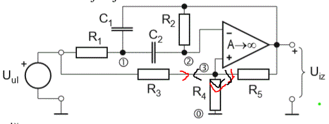

Moze netko provjerit ovo. Znaci kad zadatak radim sa pretpostavkama da struja tece jednako kao njima(crno), dobijem njihov rezultat, no ako radim kao crvenom bojom, onda mi ispadne drugacije. Jel netko mozda primjetio istu stvar?

Znaci prve dvije jednadzbe su iste u oba slucaja, a ovisno o ovome, dobijem ili U3=(Uiz+Uul)/3 ili U3=Uiz-Uul i po tome nije moguce dobit isti rezultat. Znam da govore da nije bitno kako okrenemo struje, ali ovo mi stv nema smisla